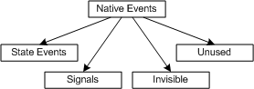
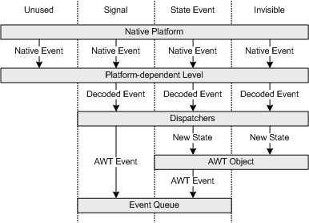
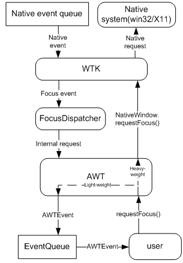
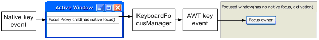
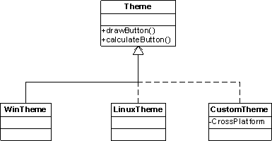
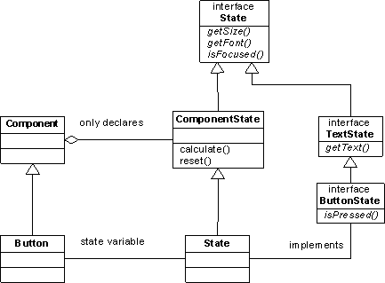

| Version | Version Information | Date |
|---|---|---|
| Initial version | Nadya Morozova, Pavel Dolgov: document created. | May 10, 2006 |
| Formatting update | Nadya Morozova | September 21, 2006 |
| Update: event handling and synchronizer | Nadya Morozova, Alexey Petrenko | April, 2007 |
This document introduces the AWT (Abstract Window Toolkit) framework delivered as part of the DRL (Dynamic Run-time Layer) initiative. This document focuses on the characteristics of the current AWT implementation.
The target audience for the document includes a wide community of engineers interested in further work with AWT to contribute to its development. The document assumes that readers are familiar with AWT and the Java* programming language.
This document uses the unified conventions for the DRL documentation kit.
As indicated in the specification [1], the Abstract Window Toolkit (AWT) is a part of the Java* Foundation Classes (JFC). AWT provides basic facilities to develop graphical user interfaces (GUI) and to draw simple graphics for platform-independent applets and applications.
In AWT, GUI consists of components, such as buttons, menus, and top-level windows. One of the main AWT features is that all its built-in components are heavy-weight, that is, every Java* component has a native GUI object behind it. The Swing library [2] is built on the basis of AWT and uses light-weight components, which do not have the 1:1 mapping with native resources.
This document describes major design features and internal specifics
of the DRL AWT implementation. Further in this document, AWT denotes
the DRL implementation for convenience.
To summarize, DRL AWT has the following key features:
AWT helps applications react to user's actions and traces the system state and the AWT internal state by means of events. Subsequent sections describe the AWT event handling implementation in DRL with focus on the interaction between AWT and the native system, specifically, the GUI subsystem of OS. For information on application events handling, consult the AWT specification [1].
The DRL AWT framework deals with the following types of events:
AWTEvent class and
are stored in the AWT event queue represented by
the EventQueue class.
AWT has the event dispatch thread (EDT) at its basis,
represented by the class java.awt.EventDispatchThread.
This thread handles all generated types of events by going over the
loop. EDT starts on AWT Toolkit creation and stops
on application termination.
In more detail, EDT performs the following event loop:
java.awt.Dispatcher class.
java.awt.EventQueue class.
java.awt.Component.processXYZEvent() methods.
EventListener interface. Applications should
implement appropriate listeners' interfaces to react to specific
events.
awake() of
the NativeEventQueue interface is called. This method
produces a native auxiliary event so that EDT becomes ready to
handle AWT events. EDT treats this auxiliary event as invisible.
This section defines native events types and the way AWT handles these events based on their type.
Figure 1 below demonstrates how native events can be classified by their role in the AWT framework.

Figure 1: Native Events Classification
Native events handling goes in two stages: the first stage depends on the
native platform, and the second stage is the same on all supported platforms.
Platform-dependent functionality comprises the Window Toolkit, WTK,
in the org.apache.harmony.awt.wtk package. This package
declares interfaces and abstract classes, the platform-specific classes inherited
from them.
AWT handles relevant native events by following these steps:
NativeEvent interface translates the event
to a unified format described by the interface NativeEvent,
puts that event to tiveEventQueue, and notifies the event dispatch
thread.java.awt.Dispatcher object.java.awt.MouseDispatcher works
with mouse events, java.awt.Dispatcher.KeyDispatcher processes
keyboard events. The result of native event dispatching depends on the event type: state event, signal or invisible. Signal native events are translated to AWT events explicitly (Figure 2, second column). For state and invisible events, the AWT framework updates the state of the AWT object corresponding to the native object that sent the event. For state events, this implicitly generates an AWT event signaling an AWT object state change (Figure 2, third column). For invisible events, the AWT object state gets updated silently (Figure 2, fourth column).

Figure 2: Native Events Handling by Type
The AWT focus subsystem is a set of classes for managing keyboard input focus responsible for:
Win32 or X11, by way of handling
native focus events and making native focus requests
In the DRL implementation, the focus subsystem functionality is distributed among several internal layers:
The interaction between user code and these levels of the focus subsystem is shown on Figure 3 below.

Figure 3. Focus Event Data Flow
The following code entities perform the major focus subsystem tasks:
java.awt.FocusDispatcher class handles focus
events received from the window toolkit level.
KeyboardFocusManager
class manage focus on the higher AWT level.
Subsequent sections describe the levels of focus management in more detail and give specifics of the DRL implementation compared to the focus specification [3].
The focus dispatcher responds to native focus events and, for those relevant to AWT, sends an internal focus change event to the higher AWT level. The dispatcher skips redundant native events and handles event proxying supported on certain native platforms. The focus dispatcher in DRL is characterized by the features listed below.

Figure 4. Focus Proxy
If the active window is the focused window, no proxying occurs. In this case, the nearest heavyweight ancestor of the focus owner or the focus owner native window itself (if focus owner is a heavy-weight component) has native focus.
The higher level of the focus subsystem generates and posts all necessary AWT events to the event queue. This level keeps track of the following focus states:
The AWT level of the focus subsystem handles focus requests
synchronously on every successful focus change request. When the
method requestFocus() is called, the keyboard focus
manager posts all necessary AWT events in the required order
irrespective of the success or failure of the native focus request. In
other words, the AWT subsystem does not wait until the native focus
request gets confirmed and the corresponding native events are
received.
After receiving a notification from the native system, WTK requests the AWT level to update the focus state via an internal request. For example, if the native system reports an unsuccessful focus change, a component might lose focus.
Note
Only certain native focus-related events cause a Java* focus state update. For example:
Window component itself,
in case no child elements are available.
setFocus(false) method on the
focus owner to clear the focus owner value.
Below, the specific features of DRL implementation are listed compared to the focus specification grouped by their function.
WINDOW_GAINED_FOCUS event, private
methods in the keyboard focus manager set focus on the appropriate
child component of the window.
This document describes the mechanism of drawing standard AWT components with platform-independent Java* means or platform-specific native API or using both approaches.
You can paint standard components in many ways, including drawing the
component parts (text, background, shadows and all other elements) by
the means of class java.awt.Graphics. Note that the
framework must not paint standard components by the
method java.awt.Component.paint() because it could be
overridden. Instead, when processing a painting event, the framework
calls the package-private
method java.awt.Component.prepaint() just before calling
the method paint(). The prepaint() method
does the actual painting for all standard components by delegating the
painting task to the theme. This approach might not seem optimal, but
it works on all supported platforms without any changes.
The org.apache.harmony.awt.Theme class implements the
default theme. Methods of this class do the following:
drawButton().
calculateButton().
The default theme class is platform-independent, non-abstract and fully functional, and it usually works when the native theme is disabled or not available, or when the native theme re-uses functionality of the standard theme.
You can create a custom theme that inherits from the default theme and
contains specific features. The current implementation contains
the WinTheme class that extends the default theme as
shown in Figure 5.
To use the native API in your theme, extend the default theme
overriding its painting methods. In the derived theme, you can use the
additional features of specific implementation of
the Graphics class, and explicitly call native API
functions via wrappers, see org.apache.harmony.misc
package for details. Figure 5 below demonstrates theme-related classes
hierarchy with methods related to the Button component as
an example. A block of code for extending
the drawButton() method is shown in Example 1 below.

Figure 5: Hierarchy of Theme Classes
After creating a derived theme, turn it on by using the
property awt.theme. This property contains the name of a
subclass of default theme class used as the theme by all components.
If the property points to a non-existent class or if the required
native library is missing, or any other error occurs, the default
theme is used. If the property is not set, the native theme of the
current OS is used if it exists. If no OS theme exists, the default
theme is used.
To force the default theme, set the command-line
option -Dawt.theme=0. As long as zero is an invalid class
name, this does the job.
Painting standard components requires access to their internal state,
such as the pressed state, the focused state, the background color,
and the contained text. Because not all these attributes are visible
through the public API, the DRL AWT module provides a set of
interfaces to allow the theme to access private and public data. The
package org.apache.harmony.awt.state contains these
interfaces, such
as, TextState, CheckboxState,
and ButtonState. Each standard component class has an
inner class that implements the appropriate interface and has the
state field of that class declared.
The java.awt.Component class stores all functionality
common for all types of standard components. Specifically,
the java.awt.Component class has an inner
class ComponentState that implements
the org.apache.harmony.awt.state.State interface. This
inner class enables implementing the state of a specific component by
overriding only a few methods.
Standard components delegate the painting and size calculation to the currently active theme and pass their state field value as a parameter to every method of the theme.
Platform-specific and component-specific code is concentrated in
separate helper classes, such as DefaultButton, the
helper to the default theme, and WinCheckbox, the helper
to the Windows* theme. The theme class contains only
simple methods.
This is an example with the Button component.
public void drawButton(Graphics g, ButtonState s) {
drawButtonBackground(g, s);
drawButtonText(g, s);
}
protected void drawButtonBackground(Graphics g, ButtonState s) {
DefaultButton.drawBackground(g, s);
}
protected void drawButtonText(Graphics g, ButtonState s) {
DefaultButton.drawText(g, s);
}
When designing a custom theme, you may need to override some of these protected methods.
Figure 6 shows an example of component classes relation, inner states
and the inheritance hierarchy of component state interfaces. The
figure contains short names for convenience, for example,
Component actually means
java.awt.Component.

Figure 6: Inheritance and Composition for Components' State
This section illustrates how the state interfaces are used in
the Button component. In DRL AWT, all standard components
follow the same model.
This is a part of the java.awt.Button code that
illustrates how to use visual themes in standard components.
class State extends Component.ComponentState implements ButtonState { … }
final transient State state = new State();
void prepaint(Graphics g) {
toolkit.theme.drawButton(g, state);
}
The framework calls the prepaint() method, which paints
standard components. The painting itself is done by the theme class,
and all the information it requires is contained in the state
variable.
In DRL, the Windows* theme is implemented by the
class org.apache.harmony.awt.theme.windows.WinTheme,
which inherits from the
class org.apache.harmony.awt.Theme.
The WinTheme class paints components using the Windows* API function DrawFrameControl() in the
classic mode and DrawThemeBackground() in the XP mode,
and basic Windows* API painting functions.
The implementation also includes several helper classes:
org.apache.harmony.awt.gl.WinThemeGraphics
has a set of native methods that call the Windows*
API. This class is tightly coupled
with org.apache.harmony.awt.gl.WinGDIPGraphics2D,
which is an implementation of java.awt.Graphics.
The WinThemeGraphics class
queries WinGDIPGraphics2D for the current clip,
translation and device context.
org.apache.harmony.awt.wtk.windows.WinEventQueue.ThemeMap
that handles theme-related native events and opens and closes
handles of native theme data when needed.
org.apache.harmony.awt.wtk.theme.windows
responsible for specific types of components, for
example, org.apache.harmony.awt.wtk.theme.windows.WinButton.
Note
If the Windows* theme does not support the combination of components attributes, it delegates painting to the default theme by calling the super class. For example, the default theme can be used when the background color of a push button differs from the theme setting.
Complying to the specification [1], DRL AWT can work within multi-threaded applications. This implementation ensures consistency of AWT framework data when accessed by multiple threads. For that, AWT synchronizes its key classes.
The main purpose of synchronization is keeping the component hierarchy consistent when component properties are queried and/or modified, so that it potentially affects other components. This includes the parent-child relationships, the child component order, inherited properties, such as the font and the background color, the size and position related properties, as well as visibility, focusable state and other conditions relevant for message handling. Concurrent modifications of these properties can make the AWT framework state inconsistent.
For example, if a thread adds a component to a list of child
components for a container without updating this component’s
field parent, another thread working with the same
component gets the wrong value of the parent field.
Moreover, the second thread may remove this component from the
container children list, which makes the behavior of the first thread
unpredictable. Synchronization helps avoid such problems.
When a method or a block of code deals with the data that must not be
modified concurrently, a synchronized section is used. The DRL
implementation uses a special monitor AWT lock more powerful
than built-in Java* synchronized blocks and methods.
The AWT lock is similar to the synchronization tools provided by
the java.util.concurrent package. The synchronized
section using the AWT lock has its own specifics, as demonstrated by
the example below.
Example 2
This example provides an excerpt of code from
the Component class demonstrating a typical synchronized
section in the AWT code. The methods lockAWT()
and unlockAWT() are the boundaries of the critical
section. The code between them is synchronized by the AWT lock.
final transient Toolkit toolkit = Toolkit.getDefaultToolkit();
…
public Color getBackground() {
toolkit.lockAWT();
try {
if ((backColor == null) && (parent != null)) {
return parent.getBackground();
}
return backColor;
} finally {
toolkit.unlockAWT();
}
}
From the syntactical standpoint, this is a try-finally structure,
which guarantees that the unlockAWT() method is always
called after doing the useful work in the body of try block.
Logically, it is used as an ordinary synchronized block, except when
using AWT lock extended functionality.
The AWT synchronizer is similar to the object java.util.concurrent.ReentrantLock
with one significant addition: it has methods storeStateAndFree() and lockAndRestoreState(),
which help to implement the unsafeInvokeAndWait() functionality for opening
modal dialogs and pop-up menus from a non-dispatch thread. This approach
is not ideal, so suggestions on a better approach are welcome.
AWT synchronization covers the following classes:
Component, Button,
and Frame
FlowLayout
and GridBagLayout
Toolkit
and KeyboardFocusManager
The total number of synchronized classes nears 40.
Simple data structures, for example, Rectangle
or Point, are not protected from concurrent modifications
for performance reasons.
java.awt.Toolkit class.
addNotify() in the Component
and Container classes.
org.apache.harmony.awt.wtk package must not use
the AWT lock explicitly.
[1] AWT spec, http://java.sun.com/j2se/1.5.0/docs/guide/awt/index.html
[2] Swing Library Description, http://java.sun.com/j2se/1.5.0/docs/guide/swing/index.html
[3] AWT Focus Subsystem specification, http://java.sun.com/j2se/1.5.0/docs/api/java/awt/doc-files/FocusSpec.html
* Other brands and names are the property of their respective owners.